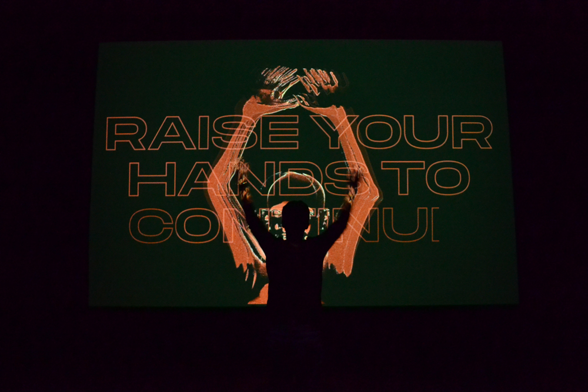
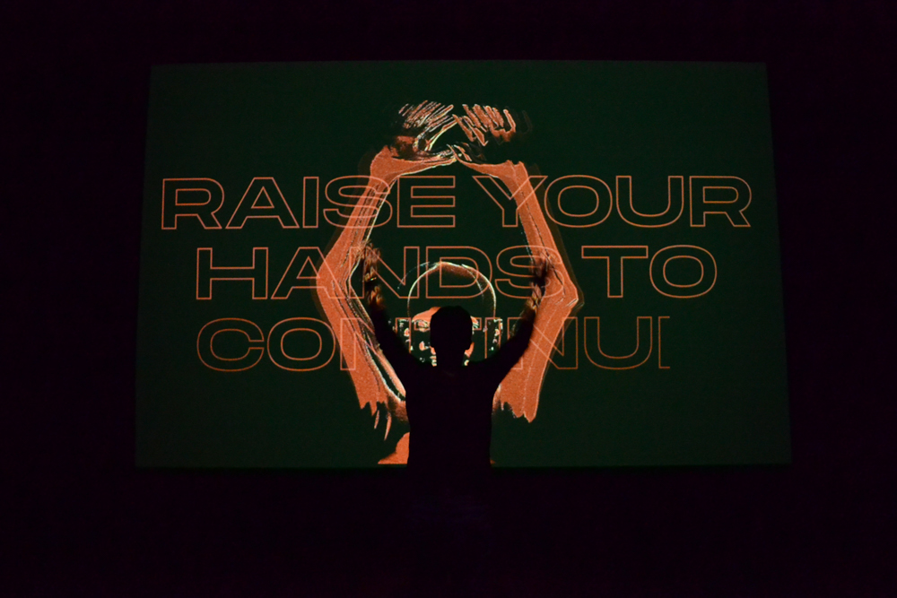

About
Obsidian is user-based interactive installation that builds a virtual community based on the collected depth data of previous participants. The abstract narrative of Obsidian, told entirely through visual language, aims to gain consent from the user to participate in an information-gathering process that stores their depth data, under the guise of a harmless and seductive interactive experience. The project touches upon modern norms of user data consent, lack of clarity of intent as well as big data and the versatility of its uses. Click here to visit the documentation and development website.
Team
Valerie Bourdon — Visuals and motion design
Ali Egseem — Sound design, analog post-processing, video editing
Codrin Tablan Negrei — Interaction and shader coding
Ali Egseem — Sound design, analog post-processing, video editing
Codrin Tablan Negrei — Interaction and shader coding


 



Process


Pitch
Obsidian was pitched as a large-scale narrative-based projection mapping experience that would envelope a room. We pictured it as an interactive movie with the crowd as participants.
During our brainstorms, the main premise consisted of:
→ Large scale projection mapping experience
→ Narrative-based
→ Movie with crowd as participants
→ Crowd sensing through Kinect or Leap Motion
→ Experience changes with motion of the crowd and the audio input
During our brainstorms, the main premise consisted of:
→ Large scale projection mapping experience
→ Narrative-based
→ Movie with crowd as participants
→ Crowd sensing through Kinect or Leap Motion
→ Experience changes with motion of the crowd and the audio input


Management
As the project manager and technical coordinator on this project, I was responsible for grant applications, budget, equipment logistics and reservation, venue organization and reservation, and producing technical drawings for the technicians on site.